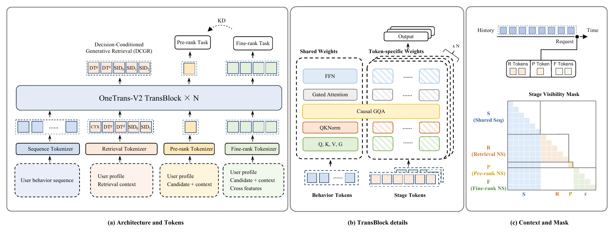
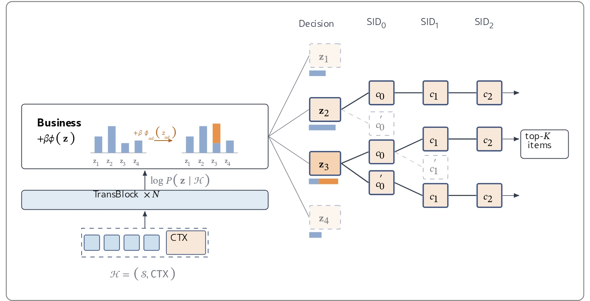
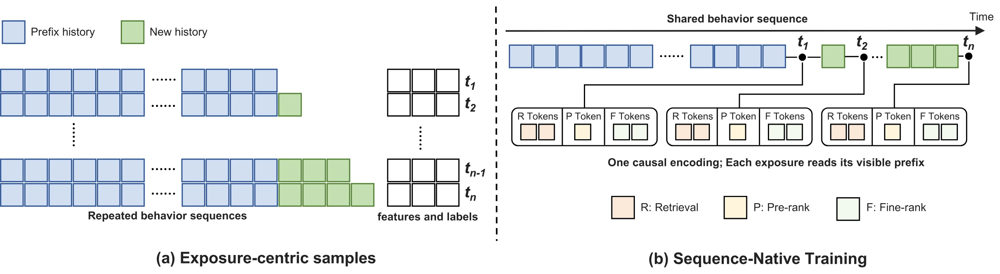

目录 · 11 节
1背景：三个阶段各训各的，问题出在哪里2先看全景：一次请求在模型里怎么走3为什么要共享用户上下文，又要用掩码隔开各阶段4为什么召回要先预测“决策”，再生成商品5为什么蒸馏可以放进同一个模型里6为什么训练要按用户组织样本7为什么扩容需要先把训练稳住8实验：一个模型能不能同时打赢三个专用模型9我认为它的局限10一个推荐或搜索团队可以怎么试11总结评价推荐系统的召回、粗排和精排通常是三个各自训练、上线的模型，同一条用户行为序列每个阶段都要重新编码，粗排和精排还常常给同一批候选排出不同的顺序。OneTrans-V2 把三个阶段做成同一个 Transformer 的三个任务：用户历史只编码一次、三个阶段共用，各阶段的候选特征照旧保留。在一个大型工业推荐系统上，它替换原有的三模型级联后，人均 GMV 提升 9.74%，同样硬件下整条链路的 QPS 是原来的 3.2 倍。三个阶段一起训练同一份用户表征，每个阶段都比单独训练更好，这比省算力更值得关注。
背景：三个阶段各训各的，问题出在哪里
工业推荐通常是一条级联：召回从十亿级商品库里选出几千个候选，粗排压到几百个，精排再挑出最终展示的十几个。三个阶段分别训练、分别部署，各有一套特征、样本和上线流程。作者指出，这种分工在规模变大之后带来了几类代价。
第一个问题是同一份用户信息被反复计算。用户的长行为序列与候选无关，三个阶段看到的是同一份历史，却各自编码一遍。训练端更严重：样本按曝光构造，每条样本都带一份行为序列，一个有 100 次曝光的用户，他的序列最多会被复制并编码 100 次。序列越长、模型越大，这部分重复越贵。
第二个问题是阶段之间互不知情，排序会打架。粗排和精排各学各的打分函数，对同一批候选可能给出不同的顺序。这种不一致是不可逆的：粗排丢掉的候选，精排再也看不到，于是每一次分歧都可能永久删掉精排本来会排到前面的商品。常见的补救是拿精排当老师、把它的打分蒸馏给粗排，但这需要单独训练、单独打分并定期刷新一个精排教师模型，又多出一条流水线。
第三个问题是召回内部还按目标拆成了多个通道。作者的系统里，主通道负责点击和下单，发现通道负责推用户没逛过的品类，广告通道负责召回广告商品，每个通道一个模型、一套解码。排序阶段可以给一个模型加多个预测头来覆盖多个目标，召回却不行，因为召回的目标决定的是“生成哪些候选”，而不只是给候选打几个分。
第四个问题是容量被切碎。每个阶段的模型各自加长序列、加特征、扩参数，都要单独实现、调参、验证和上线，整个级联没法作为一个整体扩容。另一条路线是 OneRec 这类端到端生成式推荐，直接去掉级联。但排序很依赖丰富的候选侧特征，比如用户和商品的交叉特征，作者引用已有工业实践的结论，指出去掉这些特征可能伤害质量。
作者的出发点来自他们之前的 OneTrans。OneTrans 把排序模型的特征交互和行为序列建模统一进一个因果 Transformer：行为序列 token 共享 Q/K/V 和 FFN 参数，非序列特征 token 每个用自己的参数。行为序列这部分和候选无关，天然可以跨阶段共享；非序列特征这部分和候选有关，应该留给各阶段自己。
所以作者真正要解决的是：保留级联的逐级筛选和各阶段的候选特征，把与候选无关的用户上下文合并成一份，让三个阶段在一个模型里联合训练；同时把召回的多个目标通道合并成一个生成模型；还要让这个更大的共享骨干在生产规模上训得动、跑得起。
先看全景：一次请求在模型里怎么走

- 用户发来请求，模型先用因果 Transformer 编码他的行为序列，得到一份可复用的用户上下文缓存（KV cache）。
- 召回任务读这份缓存，先预测一组“决策前缀”（这次交互大概会不会下单、花多少钱、是不是新品类、是不是广告商品），再用 beam search 生成商品的 Semantic ID，得到几千个候选。
- 粗排任务给每个候选接一个轻量 token，只用一小部分候选特征，读同一份缓存打分，留下几百个。
- 精排任务给每个候选接多个 token，用完整的候选特征，读同一份缓存打分，输出最终排序。
- 训练时三个阶段的损失一起反传，精排的 logit 同时作为粗排的蒸馏目标；样本按用户窗口组织，一个用户一天内的所有曝光共用一份序列编码。
为什么要共享用户上下文，又要用掩码隔开各阶段
三个阶段如果真共用一份用户编码，就会有两个新问题：各阶段的 token 不能互相偷看，否则精排的信息会漏进粗排；每条曝光只能看到请求发生时已经存在的行为，否则会穿越。作者用一个“阶段可见性掩码”同时解决这两点。
具体做法是，每个阶段的 token 锚定在请求时刻之前的最后一条行为上，只能注意到这个位置之前的行为序列，以及本阶段、本条曝光内部的 token（按因果顺序）。其他阶段、其他曝光的 token 一律屏蔽，行为序列 token 也永远不看阶段 token，所以用户上下文的编码不受任何一个阶段影响。粗排每个候选只用一个 token，输入是精排特征集的一个子集；精排每个候选用多个 token，输入是完整特征集。
示意：一个用户有 500 条行为，请求发生在第 480 条行为之后。召回、粗排、精排的 token 都只看前 480 条，粗排给 1000 个候选各接 1 个 token，精排给 100 个候选各接若干个 token。这 480 条行为只编码一次，三个阶段读的是同一份 KV cache，而不是各算一遍。
为什么召回要先预测“决策”，再生成商品
召回的多个通道之所以合不起来，是因为目标会改变生成哪些候选。作者提出 DCGR（Decision-Conditioned Generative Retrieval，决策条件生成式召回）：在生成商品之前，先让模型预测这次交互是什么样的，再按这个预测去生成商品。
商品先用 RQ-KMeans 对多模态 embedding 做三级残差量化，得到 Semantic ID（SID），每级码本 8192 个码。决策前缀有四个维度，标签都直接取自行为日志：购买档位 记这次交互是没买、买一单还是买多单；消费档位 记订单金额的高低，下单了才有意义；发现档位 记这件商品的品类对这个用户来说新不新；供给类型 记是自然商品还是广告商品。比如模型先预测“会下单、金额中等、品类很新、自然商品”，再生成符合这个前缀的商品；如果预测的是“不买、品类不新”，同一个用户上下文就会生成另一批商品。生成顺序是汇总召回侧特征的上下文 token、决策 token，再到 、、。
决策维度的组织方式有讲究。彼此独立的 、、 各有一个轻量的决策头，都从上下文 token 位置的隐状态预测；三个取值各自的 embedding 相加，合成一个并行决策 token 占下一个位置，三者之间没有先后顺序。只有依赖购买档位的 在这个 token 之后预测，占再下一个位置。原因是串联独立维度会引入顺序偏差：在一个早期配置上，把下单维度放在第一位时下单 HR@128 是 0.4590，放到第三位降到 0.4520。
推理时，四个维度的取值组合数量很小，一次前向就能全部打分，不必像 SID 那样逐位解码。模型把每个组合拼在缓存的用户上下文后面，同时算出每个组合的完整概率 ，也就是三个并行维度的概率之积，再乘以该组合下 的条件概率。随后给每个组合加上业务偏置，按下式选前缀并继续解码 SID：
其中 是用户上下文， 是前缀里各维度取值的偏置分之和， 是总强度。比如给最高消费档位一个正偏置，召回就会偏向高价值订单。偏置只改变哪个决策胜出，不改变某个决策下模型认为最可能的商品。加偏置后前缀分布变成 ，它正是“让期望偏置分尽量高，同时用 KL 散度惩罚 偏离模型原分布”的最优解。 越大允许偏离越远， 就退回模型自己的判断，而且 在线上设定，不用重训。

示意：模型给“自然商品、不下单”这个前缀的对数概率是 −0.5，给“广告商品、下一单”的是 −1.2。业务方给广告前缀的偏好分是 1， 时前者胜出； 时后者得分变成 −0.2，超过前者，于是这次请求会多生成一些模型本来就认为适合这个用户的广告商品。广告通道不再需要单独的模型。
为什么蒸馏可以放进同一个模型里
粗排和精排即使共用用户上下文，打分函数仍然各学各的，排序分歧会让精排想要的商品在粗排就被丢掉。既然两个阶段已经在一个模型里，精排的打分就可以直接拿来教粗排，不用另训教师。
做法是对每个粗排目标（CTR、CVR），把精排和粗排的 logit 各自减去均值（均值用 EMA 估计，momentum 0.9999），除以固定温度 ，过 sigmoid 后用二元交叉熵让粗排向精排对齐。精排的 logit 做 detach，蒸馏损失只更新粗排，精排只受自己的目标约束。这项损失和三个任务的损失在同一次反传里优化，权重是召回 0.1、粗排 1、精排 1、蒸馏 1。
示意：某个候选的精排 logit 是 1.0，精排均值是 0.2，中心化并除以温度后得到 1.6，对应概率约 0.83；粗排 logit 是 −0.5，均值是 −0.3，得到 −0.4，概率约 0.40。粗排在这个候选上被往上推，下次就不太会把它挡在精排门外。减均值的作用是只对齐“比平均高多少”，不要求两个阶段的绝对分数一致。
为什么训练要按用户组织样本
共享骨干变大以后，长序列编码成了训练的主要开销，而按曝光构造样本会让同一用户的序列被重复编码。作者提出 SNT（Sequence-Native Training，按序列组织的训练）：把一个用户在一个时间窗口内的所有曝光放在一起，只存一份、只编码一份行为序列，每条曝光按自己的请求时刻读对应的前缀。
这能成立有两个前提。行为序列只追加不插入，又是因果编码，所以每个位置的状态只依赖它之前的行为，整条序列的编码里包含了每个更早前缀的编码。每条曝光仍保留自己的请求 ID、时间戳、阶段特征和标签，只是不再自带序列副本。为了让模型知道一条行为离这次请求有多久，阶段 token 和行为之间的注意力用基于时间戳的 RoPE：query 按请求时间旋转，key 按行为时间旋转，内积只依赖两者的时间差。行为的 key 只和自己的时间戳有关，可以算一次给所有请求复用。

示意：用户上午 9 点、12 点各有一次行为，10 点和 13 点各有一次请求。按曝光构造时，10 点请求的样本带“9 点”这段序列，13 点的样本带“9 点、12 点”这段序列，9 点那条行为被编码两次。SNT 只编码一次“9 点、12 点”，10 点的曝光锚定在 9 点那条行为上，13 点的曝光锚定在 12 点那条上。
为什么扩容需要先把训练稳住
把三个阶段的容量合在一起后，作者想继续扩大模型，但直接放大并不奏效。工业推荐常用的 RMSProp 在多次重复运行之间方差很大，加宽模型也看不到收益。
作者的扩容配方有两部分。容量上，FFN 换成细粒度 sparse MoE：一个共享专家常驻，router 用 sigmoid 给其余每个专家独立打分，取分数最高的固定几个，分数归一化后加权求和，再加上共享专家的输出；注意力用 GQA，减小三个阶段共用的 KV cache。稳定性上，在每个子层前做 RMSNorm，对 query 和 key 也各做一次 RMSNorm（QKNorm），优化器换成 的 AdamW，再按 μP 和 Depth-μP 随规模调整超参：μP 规定模型加宽 倍时隐藏层学习率除以 ，Depth-μP 规定加深 倍时学习率再除以 ，同时每个残差分支的输出乘上 （ 是层数）。目的是让小模型上调好的超参直接沿用到大模型。 时 AdamW 没有动量，和 RMSProp 的区别只剩偏差校正和解耦的 weight decay。
示意：基线隐藏层学习率是 ，把宽度加到 2 倍，μP 把学习率减半；再把深度加到 4 倍，Depth-μP 再除以 ，最终用 。这样不同规模的模型可以沿用同一套调好的超参。
实验：一个模型能不能同时打赢三个专用模型
离线数据是生产日志，按时间顺序流式评估：每个 mini-batch 先打分再用于训练，指标按天算再取平均。召回用 HR@M，即真实交互商品的 SID 出现在 beam search 前 M 个结果里的请求占比；粗排和精排用 CTR、CVR 的 AUC 和 UAUC（按曝光加权的用户级 AUC）。对照组是线上正在用的三个专用模型，合计每次请求 275 GFLOPs。下表只列 HR 和 UAUC。
| 模型 | 召回 HR@1 | 召回 HR@10 | 粗排 CTR UAUC | 粗排 CVR UAUC | 精排 CTR UAUC | 精排 CVR UAUC | GFLOPs |
|---|---|---|---|---|---|---|---|
| OneTrans-GR（线上召回） | 0.0545 | 0.3112 | — | — | — | — | 202 |
| OneTrans-Lite（线上粗排） | — | — | 0.7080 | 0.7365 | — | — | 4 |
| OneTrans（线上精排） | — | — | — | — | 0.7393 | 0.7428 | 69 |
| UniPinRec | — | — | 0.7212 | 0.7506 | — | — | 325 |
| UniSGR | 0.0483 | 0.2964 | — | — | 0.7209 | 0.7328 | 117 |
| OneTrans-V2S | 0.0660 | 0.3441 | 0.7372 | 0.7534 | 0.7532 | 0.7589 | 239 |
| OneTrans-V2L | 0.0923 | 0.4053 | 0.7409 | 0.7596 | 0.7564 | 0.7682 | 662 |
UniPinRec 和 UniSGR 是近期两个把生成式召回和下游排序合在一起的框架，作者复现后分别对应到粗排和精排。小版本 V2S 的总算力略低于原级联，召回 HR@1 仍高出 21.10%，精排 CVR UAUC 高出 2.17%。这说明收益不只是靠堆算力：同样的预算，合并成一个模型就能在每个阶段都赢。大版本 V2L 的算力是原级联的 2.4 倍，召回 HR@1 提升 69.36%，粗排 CTR UAUC 提升 4.65%，精排 CVR UAUC 提升 3.42%。这说明合并后的骨干可以把多出来的算力转化成所有阶段的收益。
联合训练本身的贡献，作者在相同结构和参数量下单独测了。只合并粗排和精排，两者的 CTR UAUC 分别提升 0.17% 和 0.21%；再加入召回但截断召回梯度，召回 HR@1 提升 7.63%；让召回梯度也流进共享上下文，召回 HR@1 提升到 15.44%，粗排和精排升到 0.28% 和 0.31%。重复运行之间 CTR UAUC 的波动约 0.012%。这说明召回的 next-token 目标反过来也在帮排序学用户表征，三个阶段之间没有出现此消彼长。
去掉模型内蒸馏，粗排 CTR AUC 下降 0.55%、UAUC 下降 0.97%，精排变化不超过 0.04%。线上看，和分开训练的粗排、精排相比，两者排序的逆序率下降 6.7%，粗排前 10 与精排前 10 的重合率提升 31.4%（均为相对变化）。这说明精排想要的商品在粗排被误杀的情况明显减少，而且这份收益几乎不以精排变差为代价。
线上 A/B 按用户哈希五五分流，实验组用一个 V2L 替换全部三个模型。人均 GMV 提升 9.74%，用户活跃天数提升 0.25%，同样硬件下端到端 QPS 是对照组的 3.2 倍。V2L 每次请求的算力更高，吞吐却更好，原因在服务栈：只看精排任务，未优化时吞吐只有原精排模型的 0.58 倍，kernel fusion 后到 1.66 倍，SwiGLU 部分改用 FP8 后到 2.16 倍；三个阶段共用一份用户上下文又在整条链路上带来 1.53 倍。这说明“合并后更快”有一半要靠配套的推理优化，单靠合并模型反而更慢。
召回通道合并单独做了一次召回阶段的 A/B：实验组用 DCGR 替代主通道，并关掉发现和广告两个通道。DCGR 的 GMV 是对照组主通道的 1.5 倍，每个触达用户的新品类数是发现通道的 2.2 倍（4.81 对 2.15），广告商品每千次曝光带来的 GMV 是广告通道的 2.1 倍。业务偏置的效果也做了对比：硬性指定 （只要点击）让 CTR 提升 8.2%，GMV 却下降 5.1%；硬性把 定为最高档，客单价（每单 GMV）涨了 38.9%，订单却少了 33.5%，GMV 下降 7.7%。改用软性的业务偏置、把强度 从弱调到中再调到强，客单价从 +2.5% 升到 +13.9% 再到 +28.3%，GMV 从 +7.5% 升到 +10.4% 再到 +26.7%，CTR 则从 +2.2% 降到 −5.4%。这说明预测决策再加偏置，比外部直接指定目标更像一个可以连续调节的旋钮。
训练侧，SNT 在同样硬件下带来 4.4 倍训练加速，行为序列存储减少 95%，非序列特征因为同一用户的曝光挨着存、压缩更好，存储减半。扩容配方的消融里，换成带偏差校正的 Adam 后，CTR AUC 的运行间标准差从 0.085% 降到 0.006%，加宽带来约 0.15% 的 CTR UAUC 收益，换成 AdamW 后接近 0.3%；MoE 相对算力相同的稠密 FFN 提升 0.30% CTR UAUC。这说明在推荐模型上扩容，先要解决优化器带来的噪声，否则加宽的收益根本测不出来。
我认为它的局限
- 线上 9.74% 的 GMV 提升来自算力 2.4 倍的 V2L，算力和原级联持平的 V2S 只有离线结果。而在结构和参数量都对齐时，联合训练给排序带来的 UAUC 提升在 0.2% 到 0.3% 之间，远小于 V2L 相对原级联的 2.31% 到 4.65%。这意味着线上收益里有多少来自“统一”、有多少来自“更大的模型”，现有证据还拆不开。
- DCGR 的通道级数字比系统级效果大得多。主通道 1.5 倍的 GMV 主要来自曝光量增加 69.3%，每千次曝光的订单数反而下降 34.0%；强偏置在 DCGR 自己的曝光上让 GMV 提升 26.7%，但看用户的全部曝光，最好的一组只有 +3.0%。作者自己也说明通道之间的对比不等于系统收益，采纳时应以系统级指标为准。
- 效率结论依赖一整套定制的推理和训练基础设施。不做 kernel fusion 和 FP8 时，统一模型的精排吞吐只有原模型的 0.58 倍；SNT 的 4.4 倍加速也建立在按天切用户窗口、改样本存储格式之上。没有这套工程投入的团队，可能先拿到更贵的模型，而不是更快的系统。
一个推荐或搜索团队可以怎么试
- 先把现状量化：统计召回、粗排、精排各自在用户序列编码上花了多少算力，再离线算一遍粗排前 K 和精排前 K 的重合率、逆序率，作为后面每一步的基线。
- 从成本最低的一步做起：把粗排和精排合到一个模型里，共享与候选无关的用户序列编码，候选特征仍按阶段分开，同时加上减均值、、教师 detach 的模型内蒸馏。重点看粗排 UAUC 和前 10 重合率，论文里这一步单独就有可测的提升。
- 训练侧改成按用户窗口组织样本：每条曝光锚定到请求时刻之前的最后一条行为，先按天切窗口，确认离线指标和按曝光构造时一致，再看训练吞吐和存储的节省。
- 召回如果拆成多个目标通道，先在现有生成式召回前面加决策前缀，用日志里的真实决策做 teacher forcing，看各个切片的 HR@1 是否变好；再在线上小流量扫几个 ，同时记录通道级和全部曝光的指标。
- 要继续扩容时，先换成带偏差校正的优化器并加 QKNorm、μP，用多次重复运行确认方差降下来，再比较加宽或换 MoE 的收益；推理侧的 kernel fusion 和低精度要与模型改动同步排期。
总结评价
| 维度 | 评价 |
|---|---|
| 问题重要性 | 高。三模型级联的重复计算、阶段排序不一致和召回通道割裂，是大多数工业推荐和搜索系统都有的问题 |
| 方法创新性 | 中高。共享与候选无关的用户上下文并用掩码隔离阶段，思路直接；DCGR 用预测决策加偏置替代外部指定目标，是更有新意的部分 |
| 实验证据 | 强。三个阶段都有离线对比，联合训练、蒸馏、偏置、扩容配方都有消融，还有多次线上 A/B；不足是线上只测了大模型，通道级与系统级数字差距大 |
| 工程成本 | 高。需要改样本组织、训练框架、推理 kernel 和召回解码，收益兑现依赖这些配套 |
| 是否值得尝试 | 值得分步尝试。粗排精排合并加模型内蒸馏、按用户组织样本这两步门槛低、收益清楚，召回通道合并和整体扩容适合放在后面 |
这篇论文最有价值的结论是：在保留级联的前提下，把三个阶段合进一个模型，不只是省掉重复计算，还让每个阶段都比单独训练时更好。对维护多套级联模型的团队，最先值得借鉴的是共享用户编码和模型内蒸馏；DCGR 的决策前缀则提供了一个把多个召回目标收进一个模型的可调接口，但它的收益要按系统级指标重新核算。
读完这篇，你觉得
夜读鸮记下了，谢谢你的反馈。
点一下即可，无需登录；再点一次撤回。只统计匿名次数，不记录你是谁。
讨论
欢迎补充实验细节、复现经验或不同看法。需 GitHub 登录。
正在加载讨论…